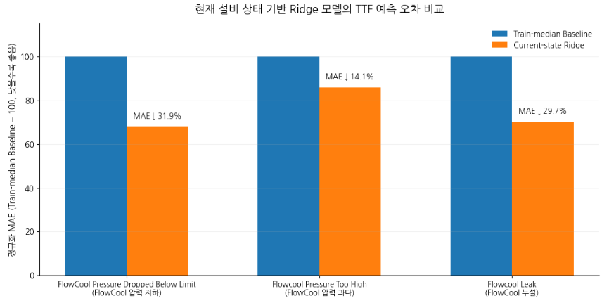
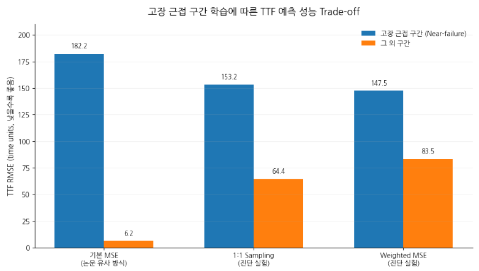

대용량 반도체 설비 시계열 데이터를 대상으로 고장 라벨과 시간 구조를 먼저 검증하고, 미래 정보가 유입되지 않는 평가 구조에서 TTF 예측과 희소 고장 데이터의 학습 특성을 분석했다. 모델 성능뿐 아니라 데이터 정의와 평가 방식이 결과에 미치는 영향까지 확인했다.
Data Source: PHM Society 2018 Data Challenge · Ion Mill Etching System
Reference: Vishnu T. V. et al., “Recurrent Neural Networks for Online Remaining Useful Life Estimation in Ion Mill Etching System”
PHM 2018 Challenge는 Ion Mill Etch 설비의 현재·과거 운전 데이터를 이용해 FlowCool 관련 고장까지 남은 시간(TTF)을 예측하는 문제다. 모델링에 앞서 설비 데이터의 구성과 예측 대상 Fault, TTF 라벨의 의미부터 정리했다.
Ion Mill Etch는 이온 빔으로 wafer 표면의 물질을 제거하는 공정이다. FlowCool 시스템은 wafer 후면에 helium gas를 공급해 공정 중 wafer의 열을 관리한다.
분석에는 압력·유량·beam voltage/current 등 17개 설비 공정·상태 변수를 사용했다.
세 가지 FlowCool Fault에 대해 각각 다음 고장까지 남은 시간을 예측했다.
현재 시점부터 다음으로 기록된 해당 Fault까지 남은 시간.
NaN은 일반 결측치가 아니라 공식 데이터 정의에 따른 하나의 label state.
원본 데이터를 바로 모델에 넣기보다, 먼저 “이 값이 무엇을 의미하는가”와 “어떤 처리가 원본 의미를 훼손할 수 있는가”를 확인했다. 이후 전처리와 평가 기준은 이 검증 결과를 바탕으로 정했다.
| 관찰한 데이터 특성 | 판단 | 처리 기준 |
|---|---|---|
| 약 5.1GB 압축 Archive / TTF 82M+ Rows | 전체 동시 적재 비효율 | Tool·Chunk 단위 순차 처리 |
| TTF NaN = 지정 Horizon 내 해당 Fault 없음 | 일반 결측치가 아닌 Label State | NaN 임의 대치 금지 |
| 동일 time에 서로 다른 설비 상태값 존재 | Timestamp 단독 식별 불가 | Timestamp 기준 중복 제거·평균화 금지 / 원본 Row 유지 |
| Sensor/Process와 TTF의 Row 수·time 순서 일치 | Row-wise Label 연결 가능 | 정렬 검증 후 원본 순서 기준 결합 |
| Tool별 Fault·TTF 분포·관측 간격 차이 | 설비별 데이터 이질성 존재 | Random Row Split 배제 / Tool별 시간 구조 유지 |
| Fault time = 기록된 Maintenance Shutdown 시점 | 실제 물리적 이상 시작 시점과 동일하다고 단정 불가 | 결과 해석 시 기록 시점 기준으로 제한 |
이 프로젝트의 목적은 현재까지 관측된 설비 상태로 이후 Fault를 예측하는 것이다. 과거와 미래 Row를 무작위로 섞으면 실제 운용 시 볼 수 없는 미래 정보가 학습에 포함될 수 있다고 판단했다. 따라서 데이터 분할부터 Window 구성, TTF Label까지 시간 방향을 기준으로 점검했다.
경계를 통과한 Window를 Train에 남기면 Validation 시점의 입력값을 미리 본 상태로 학습할 수 있다.
현재 time + TTF가 Split 이후 Fault를 가리키면 정답 자체가 미래 Validation 사건을 이용해 계산된 값이 된다.
복잡한 시계열 Feature를 만들기 전에 먼저 확인할 질문을 하나로 좁혔다. “현재 설비 상태만으로도 TTF와 관련된 예측 신호가 있는가?” 이를 확인하기 위해 17개 현재 공정·상태 변수와 단순 Ridge 회귀부터 비교했다.

설비 상태 변수를 사용하지 않고 Train 데이터의 각 Fault TTF 중앙값을 모든 Sample에 동일하게 예측하는 단순 기준이다.
Current-state Ridge에서 Baseline 대비 MAE가 압력 저하 31.9%, 압력 과다 14.1%, 누설 29.7% 감소했다.
Ridge에서 기본 예측 신호를 확인한 뒤, 더 복잡한 모델과 시계열 Feature가 실제 개선으로 이어지는지 순차 비교했다. “복잡한 방법을 사용했다”보다 “추가 복잡도가 성능 개선에 필요한가”를 기준으로 다음 실험을 결정했다.
| 모델 / Feature | 결과 | 판단 |
|---|---|---|
| Current-state Ridge | Train-median Baseline 대비 MAE 14–32% ↓ | 기본 TTF 예측 신호 확인 / 기준 모델 유지 |
| XGBoost | Ridge 대비 일관된 개선 없음 | 추가 Hyperparameter 탐색 중단 |
| Lag / Delta | Current-state 대비 개선 효과 미미 | 단순 시계열 Feature 확대 중단 |
| Rolling Statistics | 대부분 Fault에서 오차 증가 | Feature Set에서 제외 |
| Process Context | Stage·Recipe 추가 후 일관된 개선 없음 | 일반화 관점에서 추가 확대 중단 |
전체 오차가 낮더라도 실제 고장 가까운 구간을 놓칠 수 있다고 판단했다. 공개 연구의 상한 기준을 따라 세 Fault 중 하나라도 TTF가 500 time units 미만인 Window를 고장 근접 구간(Near-failure)으로 정의하고, 나머지 Window와 성능을 분리해 확인했다.

논문과 가장 유사한 학습 방식.
Near RMSE 182.2
Other RMSE 6.2
Near와 Other Window 수를 1:1로 맞춘 진단 실험.
Near RMSE 153.2
Other RMSE 64.4
희소한 Near Target의 Loss에 더 큰 가중치 적용.
Near RMSE 147.5
Other RMSE 83.5
PHM 2018 공개 연구의 LSTM Window 구성과 학습 조건을 가능한 범위에서 재현했다. 목표는 결과 숫자를 억지로 맞추는 것이 아니라, 공개된 조건이 실제 원본 데이터에서 어느 정도 재현되는지 확인하는 것이었다.
| 항목 | 공개 연구 | 재현 결과 |
|---|---|---|
| 전체 Window | 약 0.1M | 100,199 / 규모 일치 |
| TTF < 500 Window | 약 150 | 61 / 차이 확인 |
| Window Step 해석 | T=2000, “overlap 500” | Step=500 → 100,199 Windows / 논문 전체 규모와 일치 |
최종 Outer Validation에서 세 Fault의 예측 중앙값은 약 485–502 time units로 학습 TTF 상한인 500 부근에 집중됐다. 공개 연구의 선택적 Numeric Output Rule [100, 150] 통과 예측은 없었다.
일부 음수 TTF 출력도 확인했다. 평균 오차뿐 아니라 출력 분포와 물리적 유효 범위까지 함께 점검했다.
대용량 반도체 설비 시계열에서는 모델 선택에 앞서 라벨의 물리적 의미, 설비별 데이터 이질성, 시계열 정렬, 미래 정보 누출, 희소 고장 데이터와 평가 Metric의 구조를 먼저 검증해야 한다. 이를 무시하면 전체 오차가 낮더라도 실제 고장 근접 구간의 성능을 잘못 해석할 수 있다.